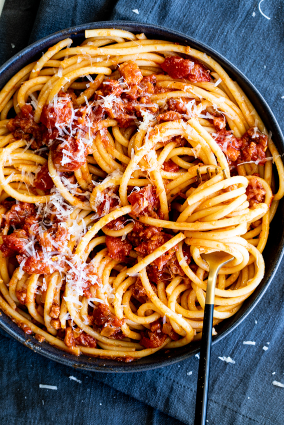

Bucatini Amatriciana

Bucatini Amatriciana Recipe
Amatriciana sauce made with pancetta, tomatoes and garlic served with al dente bucatini pasta is a classic
Italian dish everyone will love to eat.
Ingredients - Bucatini Amatriciana (serves 6)
- 2 tbsp olive oil
- 200g (7oz) pancetta
- 1/2 tsp chilli flakes
- 1 small onion finely chopped
- 4 garlic cloves crushed
- 800g (28oz) chopped tomatoes
- salt and pepper to taste
- 500g (1lb) bucatini
- Pecorino Roman to serve
Steps
- Cook the pancetta over medium heat in a large pan until crisp and golden.
- Use a slotted spoon and remove the pork from the pan and set aside.
- Cook the onion, garlic and chilli flakes in the pork fat until softened and fragrant.
- Pour the tomatoes into the pan and season with salt and pepper. Add the pancetta back into the sauce and
simmer for 5-7 minutes until the sauce has reduced slightly.
- Cook the pasta in a large pot of salted water. Reserve 1 cup of cooking water and drain.
- Toss the pasta with the sauce and add a splash of cooking water.
- Serve the pasta with a generous amount of grated Pecorino Romano.